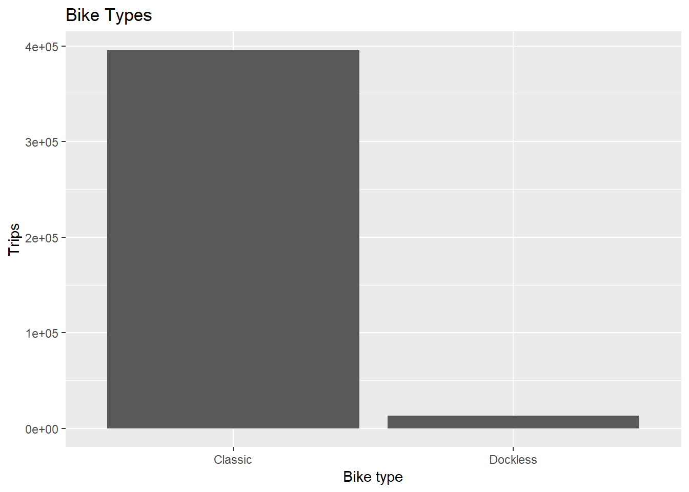
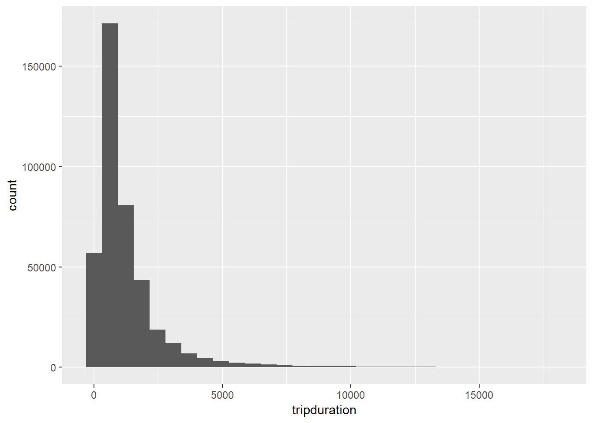

Section 7 Visualization
We will start with univariate visualization to learn the syntax, and then later move into more complex multivariate visualizations.
R has some built-in plotting ability. It’s good to recognize the syntax, but it’s not super common to see “in-the-wild” these days.
7.1 Base R plotting
R can make histograms:
And bar plots:
But base R plots are hard to customize and an inconsistent syntax. There’s general agreement that they’re not the best way to plot data in R so we aren’t going to talk much about it.
7.2 ggplot2

ggplot2 is without competiton in the graphics in R world. Not only is it the most popular plotting package, it’s one of the most popular packages, period. It is included in the tidyverse, which we already loaded. Part of the strength of ggplot is its customizability. You can create beautiful plots all in R with it. For example, the map on the cover of this book was made with ggplot.

ggplot uses the “grammar of graphics” to layer information onto plots. Each plot has the same general structure which makes it easy once you learn the structure.
7.2.1 Categorical data
For example, let’s recreate the bar plot of user types from above.
We will layer on the information in stages.
Stage 1: The plotting canvas

Stage 2: Frame your data with axes
Stage 3: Add some shapes
Stage 4: Give your plot a title and axis labels
ggplot(nice_ride_2018, aes(x = usertype)) +
geom_bar() +
labs(title = "User Types", x = "User Type", y = "Trips") # add a titleNow we have a plot! There are many ways to customize it, but for now this is a great start.
7.2.2 Try it out
Let’s create a plot of the bike types (bike_type).
Stage 1: The plotting canvas
Stage 2: Frame your data with axes
Stage 3: Add some shapes
Stage 4: Give your plot a title and axis labels
Does your plot look like this?

7.2.3 Quantitative data
We will use histograms and density plots as the univariate quantitative plots (boxplots could also be an option).
Let’s first recreate the start_month histogram from above.
Stage 1: The plotting canvas

Stage 2: Frame your data with axes
Stage 3: Add some shapes
ggplot(nice_ride_2018, aes(x = tripduration)) +
geom_histogram() # add the geoms and the total number of geoms that you want## `stat_bin()` using `bins = 30`. Pick better value with `binwidth`.
Stage 4: Add a title and axis labels
ggplot(nice_ride_2018, aes(x = tripduration)) +
geom_histogram() + # add the geoms
labs(title = "Durations of trips under 5 hours (in seconds)", x = "Duration (seconds)", y = "Trips")## `stat_bin()` using `bins = 30`. Pick better value with `binwidth`.7.3 Practice
Make a plot of the
start_dayvariable with a good title and axis labels.Change the fill of the bars to
cyan4Add a theme with
... + theme_...()Add a caption that says
Source: Niceride MN
In the end, your plot should look something like this: